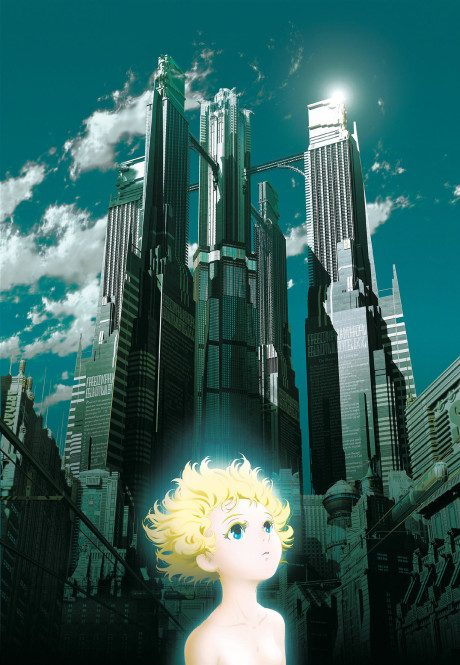

Chobits
ちょびっツ
Hideki, a broke student, finds an abandoned humanoid computer in the trash. She can only say "Chii", but she may be one of the legendary Chobits.
The anime covers the whole manga.
7.1AniList score
—Animeter, no votes yet
26episodes
Rate it or report where you stopped
Anime finished. Where does the manga pick up?
StatusFully adapted
The anime is a full adaptation of the Chobits manga and ends similarly, though the manga's ending is more bittersweet.
More like Chobits
 Done8.4
Done8.4
 Manga Ch. 277.1
Manga Ch. 277.1
 Manga Ch. 868.0
Manga Ch. 868.0
 Manga Report 1097.8
Manga Report 1097.8
 Done8.8
Done8.8
 Manga Ch. 297.9
Manga Ch. 297.9
 Manga Ch. 316.8
Manga Ch. 316.8

Film7.4 Original7.8
Original7.8
 Own end7.8
Own end7.8
 Manga Ch. 1357.8
Manga Ch. 1357.8
 Manga Ch. 1528.3
Manga Ch. 1528.3